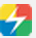

以下是我的个人电脑浏览器常用的工具，这篇笔记的目的是保存下我最常使用的一些工具链接，以便于我自己的电脑不在身边的时候，我能将身边的任何一台电脑变成我称手的利器。
搜索
Avira SafeSearch——德国小红伞
 Chrome 插件—谷歌访问助手
其他
Beautiful Free Images Unsplash
[我的 Sublime Test——插件]
- Alignment
- C++11
- C++YouCompleteMe
- Color Highlighter
- Markdown Editing
- Package Control
- ClangAutoComplete
- ConvertToUTF8
- EasyClangComplete
- OmniMarkupPreviewer
- 在线运行代码 ( PHP / C / C++ / Python / Go / Java / NodeJS / Lua / Groovy / Bash)
- 美化代码 ( JavaScript / CSS / HTML / PHP / Python )
更新时间
2018-01-02
- 添加在线工具
2018-01-01
- 添加我的 Sublime Text 常用插件
2017-12-31
- 添加纸飞机
- 添加 Chrome 插件—谷歌访问助手
2017-12-29
- 添加十项常用工具